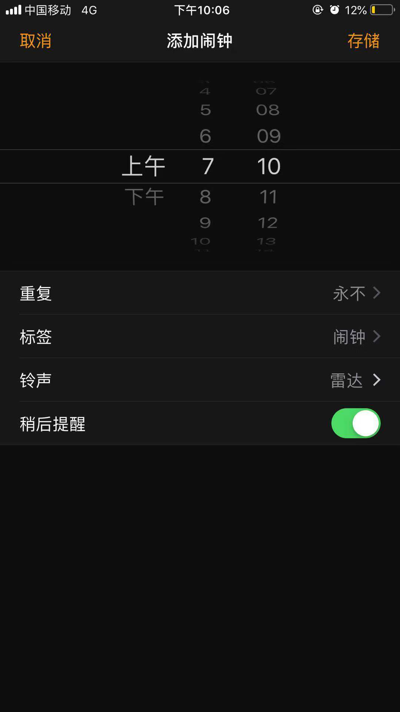

闹钟-设定中


点击(Tap)
闹钟-铃声设置

1. 在【1.1 闹钟-设定中】页面中，点击铃声按键，进入铃声设置页面。
2.闹钟音乐：
当前选中音乐具有选中✔状态；
用户点击任一行，该行音乐为选中✔状态；
用户点击任一行非当前选中音乐，播放该音乐
3.使用我的音乐：
点击【选取音乐】跳转进入本机/apple music/第三方音乐软件选择页面
4.点击“返回”将当前选中铃声定为闹钟响起铃声，并退出回到【1.1 闹钟-设定完成】
闹钟-铃声设置